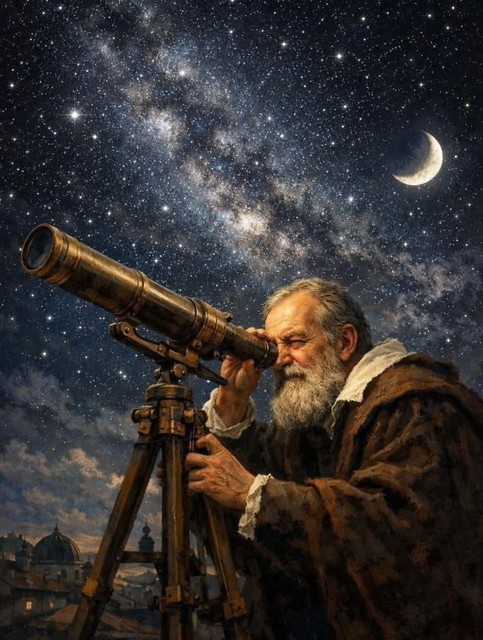
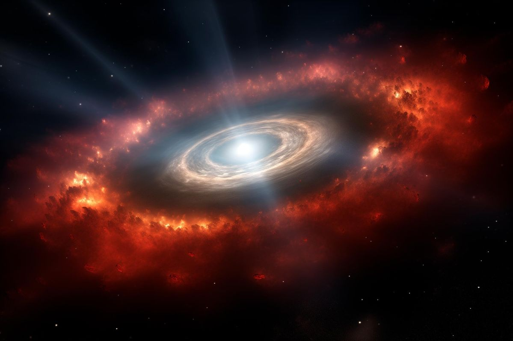

Até o século XVI, acreditava-se que a Terra era o centro do universo. Que tudo, inclusive o Sol, girava em torno do eixo de nosso planeta. Mais tarde, com Nicolau Copérnico, começou-se a considerar a ideia de que o Sol o centro do universo. Os anos se passaram e nossos conhecimentos sobre o espaço se desenvolveram. Chegamos à resposta de que existe um grande infinito: galáxias, outros planetas, estrelas maiores que o Sol. Por fim, vimos que o Sol, influenciava diretamente a órbita de oito planetas, dentre eles, a Terra.
O Sistema Solar é formado pelo Sol e pelos planetas: Mercúrio, Vênus, Terra, Marte, Júpiter, Saturno, Urano e Netuno. Os planetas seguem essa ordem partindo, como ponto inicial, o Sol. Não só os planetas que circulam em torno do Sol: existem estrelas, satélites naturais (chamadas de luas) e outros corpos espaciais. Todo o Sistema Solar está dentro de algo maior: a Via Láctea (a galáxia formada por milhares de estrelas e corpos celestes e que abriga o Sistema Solar).

O sol e o Sistema Solar tiveram origem há 4,5 bilhões de anos a partir de uma nuvem de gás e poeira que girava ao redor de si mesma. Sob a ação de seu próprio peso, essa nuvem se achatou, transformando-se num disco, em cujo centro formou-se o sol. Dentro desse disco, iniciou-se um processo de aglomeração de materiais sólidos, que, ao sofrer colisões entre si, deram lugar a corpos cada vez maiores, os outros planetas.
A composição de tais aglomerados relacionava-se com a distância que havia entre eles e o sol. Longe do astro, onde a temperatura era muito baixa, os planetas possuem muito mais matéria gasosa do que sólida, é o caso de Júpiter, Saturno, Urano e Netuno. Os planetas perto dele, ao contrário, o gelo evaporou, restando apenas rochas e metais, é o caso de Mercúrio, Vênus, Terra e Marte.

Disco protoplanetário
Disco de poeira girando em volta de uma estrela jovem.